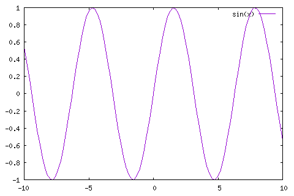

About
Table of Contents
A simple repository to place my math study notes.
Exported page: http://www.idryman.org/org-math/
1 Emacs Setup
You can either use my github config https://github.com/dryman/felix-emacs-config or use the following snippet in your .emacs
(org-babel-do-load-languages 'org-babel-load-languages '((gnuplot . t)) (python . t)) (setq org-startup-with-inline-images t) (setq org-pretty-entities t) (add-hook 'org-babel-after-execute-hook 'org-redisplay-inline-images)
The setup is mainly for using gnuplot in orgmode. Below is a minimal demo.
2 Example plot
To plot a math function in org, you can use gnuplot in org-babel section. Here is the snippet for drawing a sin(x) function and embed the plot in emacs. You have to view the snippet in raw format from github, or in emacs. You can also change the gnuplot snippet in emacs and type C-c C-c to update the plot.
reset plot sin(x)

In the raw snippet, I set the options
:file img/demo.png :term png small size 480,320 :exports both
The default terminal output size is 640,480 and is too large for me. If you are fine with that you can omit the :term setting.
You can change the :export setting to get just the plot by result, only code code, both both (which I used in this example), or nothing none. This changes the behavior of how it shows up on github page. The default is code only.
3 Math example
3.0.1 Greek characters
\alpha \beta
α β
3.0.2 Formulas
\sum_{n=0}^\infty 1/n
∑n=0∞ 1/n
Nope, it cannot render both the subscript and superscript. Complicated latex expressions can be written in org-mode and output as latex document, but it doesn't work well in html output.
4 LICENSE
Copyright (c) 2016 Felix Chern
Permission is granted to copy, distribute and/or modify this document under the terms of the GNU Free Documentation License, Version 1.3 or any later version published by the Free Software Foundation; with no Invariant Sections, no Front-Cover Texts, and no Back-Cover Texts. A copy of the license is included in the section entitled "GNU Free Documentation License".